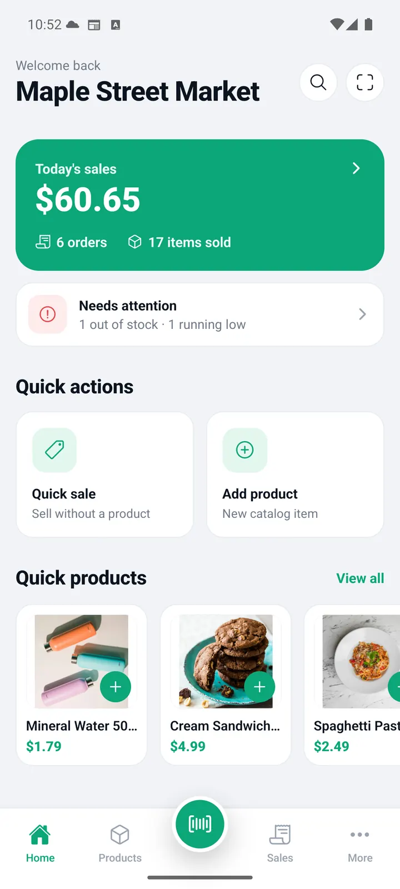
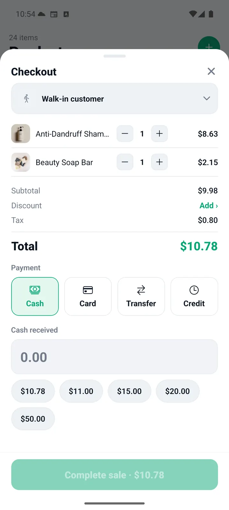
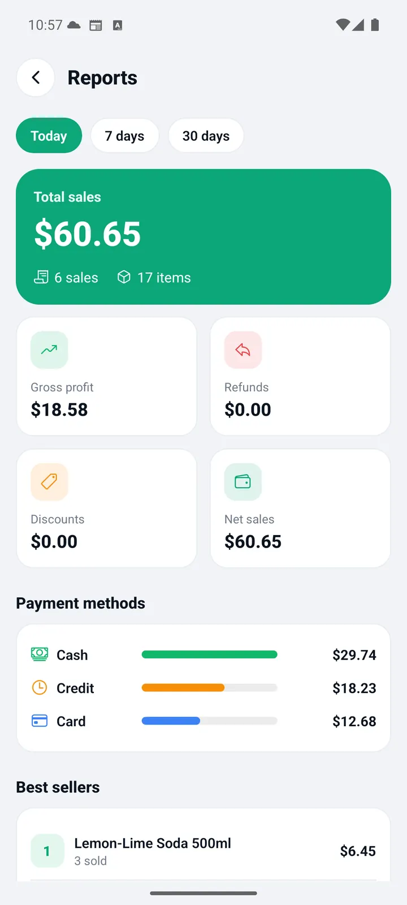

Agrega o escanea
Escanea el código o busca el producto.
POS offline para tiendas colombianas
Vende, fía y cuadra la caja aunque se caiga el internet.
Surtivox POS es un punto de venta offline hecho para tiendas de barrio colombianas.

Del mostrador al cierre
Escanea el código o busca el producto.
Efectivo, Nequi, Daviplata, transferencia o fiado.
Consulta ventas, ganancias y productos agotados.
Todo en un solo lugar
Las herramientas que de verdad usa una tienda de barrio, sin menús interminables ni configuración eterna.
Vende sin conexión. Tus ventas quedan guardadas en el teléfono.
Escanea para agregar o vender un producto.
Compara precios publicados por Éxito, Jumbo y Olímpica desde la caché local.
Lleva la cuenta de lo que te deben y registra abonos.
Imprime o comparte recibos con los datos de tu negocio.
Consulta ventas, devoluciones y productos más vendidos.
Controla stock, fotos, categorías y productos agotados.
Maneja tiendas separadas en un mismo dispositivo.
La app, de verdad
Pantallas limpias, botones grandes y la información importante donde la necesitas.


Sin tienda de aplicaciones
Descarga el APK.
Android te pedirá permitir instalación desde esta fuente.
Abre Surtivox y configura tu negocio.
Es una descarga directa desde GitHub Releases. No requiere Play Store.
Antes de instalarlo
Lo que suelen preguntar antes de probar Surtivox en una tienda real.
Las funciones offline principales son gratuitas. La nube es opcional.
No. Ventas, productos, caja y reportes funcionan localmente.
Descarga, permite la instalación desde el navegador y abre el archivo.
Viene del release oficial del repositorio. Puedes revisar el código fuente y el historial de releases.
No. La distribución actual es directa mediante GitHub Releases.
La descarga publicada es para Android. La app es multiplataforma, pero el APK no sirve para iOS.
En SQLite, dentro del teléfono. El respaldo en la nube es opcional.
Sí. Cada tienda mantiene productos, personal, recibos y libros separados.
Descargando el APK más reciente. Los datos locales se conservan.
Desde GitHub Issues.
Puedes usar el respaldo o la sincronización opcional.
Porque permite distribución directa, control de versiones y pruebas rápidas sin pasar por la tienda.
Menos cuentas. Más ventas.
Descarga Surtivox, configura tu tienda y empieza a vender. Sin cuenta, sin internet y sin enredos.